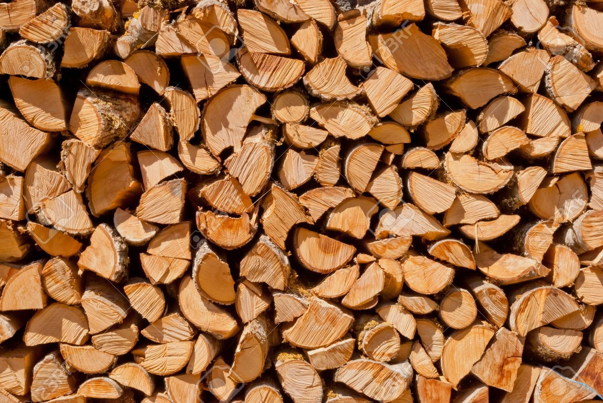

W00D

We Love Efficiency
Here at The Odin Project, we value efficiency over anything else.
This belief has helped us to create great straightforward coding courses, provide an
efficient means of interacting with the community, and now a great way
to consume fiber. Like our coding courses, this is not for the faint of heart.
Ingredients
- 50 pounds (lbs) of timber
- Stihl 461 Chainsaw with an appropriate guide bar
- Tenacity
Secondary Ingredients
- Proper PPE
- A coach or trusted friend
Directions
- Cut the wood into bite sized chunks or slightly larger
- Discuss with your coach/friend a good strategy to eat all the wood before dark
- Eat